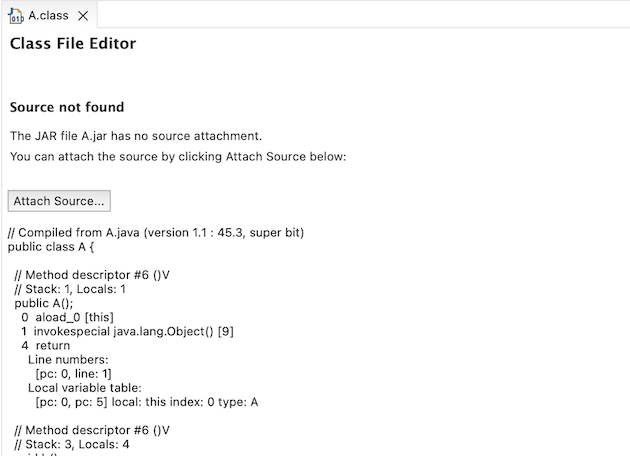
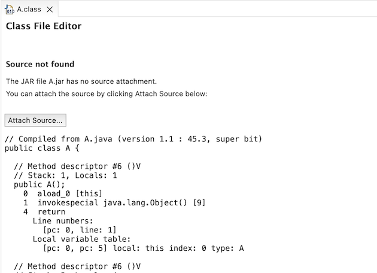

Here are descriptions of some of the changes of interest to plug-in developers made to the Eclipse Platform and SWT for the 4.23 release of Eclipse.
New features oriented towards end-users of the platform can be viewed in the What's New section of the Workbench User Guide.
Platform Changes |
|
| Class File Editor font |
The Class File Editor uses now the Text font instead of the System font.
The monospace font makes the display byte code better readable.
Old look and feel:  New look and feel:  |
SWT Changes |
|
Equinox Changes |
|